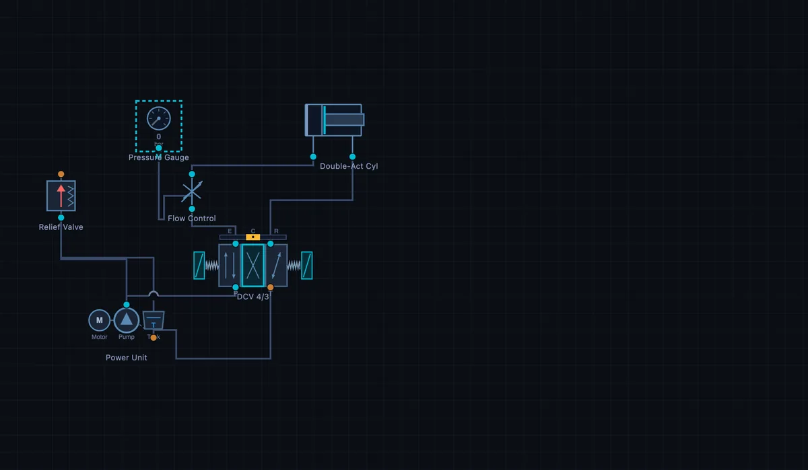

Hydraulic Circuit Simulator and Trainer
Drag & Drop • ISO 1219 Symbols • Animated Oil Flow • Pre-Built Circuits — Simulate • Explore • Practice • Quiz
3D Model — Chassis II & Lab: Hydraulic Brake Systems & Valves
Interactive 3D model of this apparatus. Pick a component on the right, then drag to rotate · scroll to zoom · right-drag to pan.
ⓘ Circuit Diagnostics — design & safety checks
⚠ Fault Injection — inject realistic failure modes
📊 Oscilloscope & Data Logger — multi-channel trace with CSV export
1 Overview
Welcome to the Hydraulic Circuit Simulator and Trainer — a free, browser-based hydraulic systems simulator designed for mechanical engineering students, fluid power technicians, vocational instructors, and maintenance engineers. This tool serves as a powerful FluidSIM online trainer alternative, providing interactive ISO 1219 schematic building, real-time oil flow animation, and comprehensive learning modes — all without installation, signup, or licensing fees.
Whether you are a beginner learning Pascal’s law or an advanced student designing multi-actuator circuits, this hydraulic trainer bridges the gap between textbook theory and hands-on practice. The simulator features 50 hydraulic components, 10 pre-built circuit templates, and 4 interactive learning modes (Simulate, Explore, Practice, Quiz).
2 Setting Up the Job
- Select a mode — Choose Simulate to build circuits, Explore to study concepts, Practice for calculation problems, or Quiz for self-assessment.
- Load a pre-built circuit — Click any of the 10 circuit templates (Meter-In, Meter-Out, Regenerative, etc.) to instantly populate the canvas with a working circuit.
- Pick your units — Use the SI / Imperial toggle next to the mode tabs to switch every readout and gauge between bar ↔ psi, L/min ↔ gpm, kW ↔ hp, kN ↔ lbf, and mm/s ↔ in/s. All calculations stay in SI internally.
- Or build from scratch — Click a component in the left palette, then click anywhere on the canvas to place it.
- Connect components — Click a port (small circle) on one component, then click a port on another to draw a hydraulic line. Click the empty canvas between ports to add waypoints for custom routing.
- Run the simulation — Click the Run button or press Space. Animated particles show oil flow direction and speed. Pressure readings appear on each connection.
- Control actuators — Click directly on a DCV (directional control valve) to switch its spool position between Extend, Center, and Retract.
3 Component Library — 50 ISO 1219 Symbols
This hydraulic systems simulator includes all essential fluid power components drawn to ISO 1219 standard:
Power Source: Power Unit (Pump) — configurable Max/Rated Pressure (50–350 bar) and flow rate (5–100 L/min). Read that first parameter carefully: a positive-displacement pump is a flow source, not a pressure source. It does not “make 150 bar” — it delivers litres per minute, and the pressure that results is whatever the load and the relief valve allow. The rated pressure is simply the ceiling the unit is built to survive.
Directional Control Valves: DCV 4/3 (4-port, 3-position with Extend/Center/Retract), DCV 3/2 (3-port, 2-position for single-acting cylinders), and 2/2 Way Valve (on/off shut-off).
Flow Control: Flow Control Valve (1–60 L/min), Throttle Valve (5–100% opening), Fixed Orifice, Check Valve, Pilot Check Valve, and Shuttle Valve. The plain Flow Control Valve is a needle valve — it is not pressure compensated, so it obeys the orifice law Q = Qset × √(ΔP/100 bar). Increase the cylinder load and you will see the actuator slow down, because a higher load leaves less pressure drop across the needle. Swap it for the Pressure-Comp FC and the speed stops changing — its compensator spool holds a constant 7 bar across the metering orifice whatever the load does. That side-by-side comparison is the entire reason compensated valves cost more. The Fixed Orifice follows ΔP ∝ Q²/d⁴, so halving the bore multiplies the drop by sixteen.
Pressure Control: Relief Valve (50–350 bar), Proportional Relief, Pressure Reducing Valve (20–200 bar), Sequence Valve (30–300 bar), and Counterbalance Valve with a selectable catalogue pilot ratio (1.5:1, 3:1, 4.5:1, 8:1, 10:1). The counterbalance spool is solved on a full force balance — it cracks when load pressure + (R × pilot pressure) ≥ setting + (R+1) × back pressure. The back-pressure term is why a restricted return line makes a real over-centre valve chatter or refuse to open, and it is the reason counterbalance valves are so often specified with an external drain.
Actuators: Single-Acting Cylinder (with a sized return spring), Double-Acting Cylinder (configurable bore, rod, stroke, and Load in kN), Telescopic Cylinder, Rotary Actuator, and Hydraulic Motor (5–100 cm³/rev with a Load Torque in N·m). Cylinders are solved on a full piston force balance, not the schoolbook p = F/A:
extending: ηm (pcapAbore − prodAann) = F · retracting: ηm (prodAann − pcapAbore) = F
Both faces are wetted, so whatever the exhausting side is pushing against comes straight back out of the driving side. A mechanical efficiency of ηm = 0.90 (seal and bearing friction) and a motor volumetric efficiency of ηv = 0.95 (internal leakage) are applied throughout, which is why the simulator asks for slightly more pressure and gives slightly less speed than an ideal hand calculation. Two consequences you can see on screen:
- Pressure intensification. Meter the rod-side exhaust of an 80/45 cylinder and the rod side climbs to roughly 1.46 × the cap side, because Abore/Aann = 1.46. The cylinder overlay prints this back-p figure live. It is the classic reason a meter-out circuit can burst a rod-side hose rated for the pump pressure.
- Over-running loads. The Load parameter now goes negative. A negative load is an aiding load — a suspended weight pulling the rod out — and with one the cap-side pressure collapses toward zero. Nothing in the circuit resists the load, and the simulator says so. Fit a counterbalance valve or meter the exhaust and the actuator is controlled again. That is the whole job of an over-centre valve, and it cannot be demonstrated with a load that is only ever positive.
A load beyond the available supply pressure still stalls the actuator. The single-acting cylinder only springs back if its return spring is actually stronger than the load — a spring sized for seal friction cannot lift a heavy weight, and the simulator refuses to pretend otherwise. The motor shows live RPM and torque, with T = ΔP × D × ηm / 20π and n = Q × 1000 × ηv / D.
Utility: T-Connector, Accumulator (20–200 bar precharge, 1–50 L), Pressure Gauge, Flow Meter, and Filter. The accumulator follows Boyle’s law — pgas = ppre / (1 − x), where x is the fraction of gas volume displaced by oil — so the last litres in cost far more pressure than the first, exactly as on a real nitrogen bladder. It charges whenever line pressure exceeds its gas pressure (a live % badge shows the charge state) and automatically discharges as an emergency supply if the pump fails — try it with the Pump failure fault to see ride-through in action.
4 Building & Simulating Circuits
Place components by clicking in the palette then clicking the canvas. Move by dragging. Connect ports by clicking port circles. Add waypoints by clicking empty canvas during connection. Drag segments to adjust routing. Right-click a connection to clear waypoints.
10 Pre-Built Circuit Templates: Meter-In, Meter-Out, Regenerative, Sequence, Bleed-Off, Counterbalance, Safety, Priority, Sync Cylinders, and Precision Speed.
Simulation features: Animated oil flow particles, pressure computation, cylinder extension/retraction at true physical speed (a 300 mm stroke at 100 mm/s completes in 3 s, matching the speed readout), motor rotation, live readout panel, interactive DCV control (click to switch spool position), and circuit validation warnings. Flow restrictors follow the orifice law — pressure drop rises with the square of flow.
Where the pressure actually is. The supply branch is solved backwards from the load, so a gauge tapped downstream of the DCV reads the pressure the load demands, not the relief setting — a 30 kN load on an 80 mm bore reads about 66 bar even with a 150 bar power unit, and the System Pressure readout follows it down. Centre the DCV and the same line jumps to the relief setting, because a deadheaded pump has nowhere else to send its flow. Put a needle valve in the pressure line (meter-in) and the gauge upstream of it stays at relief while the gauge downstream sits at load pressure — the difference between the two is exactly the energy being burned as heat across the orifice. The Hydraulic Power card is computed from the real line pressure, so it drops when the load drops instead of quoting the pump nameplate.
Component manipulation: Rotate 90° (right-click or toolbar), Duplicate (right-click), Delete (right-click, toolbar, or Delete key), Undo (Ctrl+Z, up to 50 states), Edit Parameters (right-click → Info). In the properties panel every slider is paired with a type-in number box — enter an exact value (e.g. 63 mm bore) and press Enter; out-of-range values clamp automatically.
5 Explore, Practice & Quiz
Explore mode provides an interactive hydraulic reference library across Fundamentals (Pascal’s Law, Flow-Pressure-Power, Hydraulic Advantage, Continuity Equation), Components (12 detailed entries), and Circuits (5 topologies with descriptions and applications).
Practice presents 12 randomised calculation problems covering cylinder force, motor speed/torque, pump flow, system power, regenerative circuits, area ratios, and volume relationships. Step-by-step solutions provided.
Quiz generates a 15-question assessment (8 MCQ + 7 numeric) with immediate feedback, correct answers, and final score classification.
6 Canvas Tools & Annotations
Use the mark-bar above the canvas to annotate your circuits:
- Move tool — select, move, resize, duplicate, rotate, and delete annotations. Double-click a text label to edit it.
- Sketch tool — freehand drawing with pressure sensitivity. Pick colour and width from the dropdown. Stays active after each stroke for continuous drawing.
- Shape tool — draw rectangles, circles, ellipses, arrows, lines, double-arrows, or text labels. Pick shape type, colour, width, and fill from the dropdown.
- Toggle annotations — show/hide all annotations without deleting them.
- Clear annotations — remove all or a category (sketches only, shapes only).
- Export PNG — save the canvas (with annotations) as a PNG image.
Zoom & Pan: Ctrl+Scroll to zoom towards cursor, Ctrl+Drag or H key for pan mode, pinch-to-zoom on touch. Toolbar buttons: Zoom In/Out, Pan Toggle, 1:1 Reset, Fit All. Right-click empty canvas toggles pan mode.
Fullscreen: Click the fullscreen button (bottom-right) to expand the canvas with the component palette.
7 Professional Instrumentation — Diagnostics, Faults & Oscilloscope
Benchmarked against FESTO FluidSIM, the simulator ships with three industrial-grade panels below the canvas:
Circuit Diagnostics — a live design-and-safety checker that runs every second. It flags missing pumps, unconnected components, actuators with unwired ports, over-set pumps that waste energy, over-running loads with nothing holding them, and cases where the pump is running but flow is blocked. Two of the checks are written against ISO 4413 clause 5.4.5.1, which requires every hydraulic system to limit its pressure by a means that cannot be defeated: the simulator reports an error if there is no pressure-relief device at all, and a second error if a relief valve is present but can only be reached through a directional control valve. The second case is the one students get wrong — a relief hidden behind a closed-centre DCV protects nothing, because the moment the spool centres the pump is deadheaded with no path to tank. A coloured summary pill shows at a glance whether all checks pass (green), there are warnings (amber), or there are errors (red).
Fault Injection — inject real-world failure modes while the simulation runs: pump failure (total loss), external leak (50% pressure drop), blocked filter (flow restriction), oil overheating (viscosity drop, 30% flow loss), relief valve stuck closed (no pressure cap), cavitation (suction loss, 40% flow down), and air ingress (spongy response). Use the dropdown to pick a fault and the Status readout will switch to red with the fault name; click Clear fault to recover. Tip: tee a charged accumulator onto the pressure line before injecting pump failure and the status will switch to “accumulator supplying” while the stored oil keeps the actuator moving — a realistic demonstration of emergency ride-through.
Oscilloscope & Data Logger — a four-channel scrolling scope. Assign any gauge, flow meter, cylinder, motor, or pump in the circuit to any of CH1–CH4 and watch live pressure, flow, extension, RPM, or temperature traces over a 10-second window. Each channel auto-scales independently. Use Pause to freeze the trace, Clear to reset the buffer, CSV to export the entire time-series for analysis in Excel/MATLAB, and PNG to save a watermarked screenshot for reports. This is the fastest way to capture step-response, stall, sequencing, or fault recovery behaviour for coursework and lab evidence.
8 Keyboard Shortcuts & Tips
Keyboard shortcuts: Space = Run/Stop, Ctrl+Z = Undo, Ctrl+Shift+Z = Redo, E/C/R = Set all DCVs to Extend/Center/Retract, Delete = Delete selected (annotation or component), D = Duplicate component, Escape = Exit pan mode / Cancel.
Zoom shortcuts: Ctrl+= Zoom in, Ctrl+- Zoom out, Ctrl+0 Reset zoom, Ctrl+1 Fit all, H Toggle pan mode.
- Always start with a Power Unit — every hydraulic circuit needs a pump.
- Add a Relief Valve early to protect against over-pressure.
- Use pre-built circuits to learn — load, study, modify, observe.
- Rotate components for compact, readable schematics.
- Right-click for options — Info, Duplicate, Rotate, Delete.
- Watch pressure readings during simulation — unexpected values indicate incorrect valve settings or missing return paths.
- Master Practice mode calculations before attempting the Quiz.
Hydraulic Circuit Simulator and Trainer — Build and Analyze Fluid Power Circuits Online
This is free hydraulic circuit design software that runs in the browser — no install, no licence and no signup. You drag ISO 1219 schematic symbols onto the sheet, connect the ports, and run the circuit to see live oil flow, pressure and actuator motion. If you would rather not start from a blank sheet, six ready-made circuit templates load in one click — meter-in, meter-out, bleed-off, regenerative, sequence and counterbalance — and any circuit you build can be saved or shared as a link. It is built for learning hydraulic system design, reading schematics and practising fault-finding, not for signing off a production machine.

A hydraulic circuit transmits power using pressurised oil (50–350 bar) through pumps, valves, and actuators. The cylinder force formula is F = P × A, where P is system pressure and A is piston area. This free simulator lets you build ISO 1219 hydraulic circuits with 50 components, simulate oil flow and pressure, and learn fluid power design interactively.
A hydraulic circuit simulator is an essential learning tool for anyone studying fluid power systems. This free hydraulic circuit builder online lets you drag and drop standard ISO 1219 hydraulic symbols onto a virtual canvas, connect them with pressure and return lines, set component parameters, and run a full hydraulic system simulation. Watch animated oil flow through your circuit, observe cylinder extension and retraction, monitor pressure gauge readings, and see what happens when a relief valve opens under excess pressure — all without expensive physical equipment or proprietary hydraulic circuit design software.
The simulator includes pre-built circuits that demonstrate fundamental hydraulic concepts: the meter-in circuit places a flow control valve in the pressure line to regulate actuator speed under resistive loads; the meter-out circuit places control on the return line for overrunning loads; the regenerative circuit recirculates rod-side oil to the cap side for faster extension; the sequence circuit uses sequence valves to operate multiple actuators in order; and the bleed-off circuit diverts excess pump flow to tank for energy-efficient speed control. Each pre-built circuit can be modified and re-simulated to deepen understanding.
Understanding Directional Control Valves in Hydraulic Circuits
The DCV 4/3 hydraulic valve is the most common directional control element in industrial hydraulic circuits. It has four ports — pressure (P), tank (T), and two work ports (A and B) — with three spool positions. In center position, the valve can be configured as closed-center (all ports blocked), open-center (all ports connected to tank), or tandem-center (work ports blocked, P connected to T). Shifting the spool left or right directs pressurized oil to the actuator for extend or retract motion. The 3/2 DCV variant has three ports and two positions, commonly used to control single-acting cylinders. This hydraulic schematic simulator lets you place both valve types, set their spool position, and observe the resulting flow paths.
How to Design a Hydraulic Circuit — Fluid Power Circuit Design Basics
Every hydraulic circuit starts with a hydraulic power unit consisting of a pump, electric motor, and reservoir. The pump converts mechanical energy to hydraulic energy, generating flow at the system pressure set by the relief valve. From there, directional control valves route oil to actuators — cylinders for linear motion or motors for rotary motion. Flow control valves regulate speed, check valves prevent reverse flow, and filters protect components from contamination. A complete hydraulic cylinder circuit diagram always includes a return path to tank, ensuring oil circulates continuously. This virtual hydraulic lab enforces these rules and warns you if your circuit has dead ends or missing return paths.
Reading a Hydraulic Schematic, From Pump to Tank
The hardest thing about hydraulic schematics is not the maths. It is the symbol language. Every component is drawn as a small abstract shape, and the lines between them mean very different things depending on whether they carry pressure, return, drain, or pilot signal. Here is how I walk new students through reading a simple meter-in circuit, top to bottom:
- Start at the tank. The reservoir is the bottom symbol, drawn as an open rectangle. Every drop of oil in the circuit comes from here and returns here. If a line doesn’t eventually loop back to tank, the circuit will lock up after the first stroke.
- Find the pump. Pump is a circle with one arrow head out (fixed displacement) or two arrows in opposite directions inside (variable). The pump line goes UP to the rest of the circuit. Solid line = pressure side.
- Spot the relief valve. A small box with a spring and a tank line, parallel to the pump output. This sets system pressure. Without it the pump would deadhead and either stall or burst something.
- Follow the pressure line to the directional control valve (DCV). The DCV is the big multi-box symbol in the middle. Each “box” is one spool position, showing the flow paths for that position. The labels P (pressure in), T (tank), A and B (work ports) sit at the corners.
- Trace A and B to the actuator. The cylinder symbol is two parallel lines with a piston between them. A goes to the cap end (extension), B to the rod end (retraction). When the DCV shifts left, P connects to A — the cylinder extends. When it shifts right, P connects to B and A returns to tank.
- Find anything in series with A or B. A plain (two-way) needle valve throttles oil in both directions, so it does not only control the stroke it was fitted for. On the A line it meters oil into the cap on extend (meter-in) and meters the cap exhaust on retract — the simulator throttles both strokes, and because the bore is the bigger area the retract stroke ends up slower per litre. On the B line it meters the rod-side exhaust as the cylinder extends (meter-out, the control of choice for an overrunning load) and meters the supply on the way back. Whether a flow control is meter-in or meter-out is decided by where it sits — and if you want one stroke free, you need the one-way flow control with its integral bypass check.
This six-step walk is the only reliable way to read a complicated schematic without losing track. Skipping ahead to the actuator and trying to reason backwards almost always goes wrong on the pilot lines.
A Worked Cylinder Sizing — How Big a Bore for 5 Tonnes of Push?
Size a hydraulic cylinder to lift a 5,000 kg load (49 kN) at 50 mm/s using a 160 bar pump. Include a 20% safety margin on force.
| Step | What it gives you | Working | Result |
|---|---|---|---|
| Required force with margin | Freq = 1.2 × m·g | 1.2 × 5000 × 9.81 | 58.9 kN |
| Working pressure (allow drop) | Pwork = 0.85 × Ppump | 0.85 × 160 bar = 136 bar | 13.6 MPa |
| Required piston area | A = F/P | 58900 / 13.6×106 | 43.3 cm² |
| Bore diameter | D = √(4A/π) | √(4×43.3/π) | D = 74.3 mm |
| Round to standard ISO bore | (ISO 3320: 50, 63, 80, 100, 125 mm) | — | 80 mm bore |
| Actual force at 160 bar | F = P·A = 160bar × (π/4)×80² | — | 80.4 kN (1.4× safety) |
| Flow needed for 50 mm/s extend | Q = A·v | (π/4)×80² × 0.05 | 15.1 L/min |
Now you size the pump to deliver 15 L/min at 160 bar with adequate margin, and check pipe diameter so velocity stays below ~6 m/s in pressure lines and ~2 m/s in return lines — the usual workshop rule of thumb.
The DCV Family — What 4/3 and 3/2 Actually Mean
DCV naming follows a simple convention: the first number is ports, the second is positions. So a 4/3 DCV has 4 ports (P, T, A, B) and 3 positions. A 3/2 has 3 ports and 2 positions. Common types and where you find them:
| Valve | Centre position | What it does | Where you find it |
|---|---|---|---|
| 4/3, closed centre | All ports blocked | Holds load against gravity; pump deadhead, needs unloader | Vertical cylinders, holding clamps |
| 4/3, open centre | All ports to tank | Pump unloaded; cylinder floats | Mobile equipment with single-pump architecture |
| 4/3, tandem centre | A & B blocked, P to T | Holds load, pump unloaded | Industrial circuits with multiple cylinders |
| 4/3, float centre | A & B to T, P blocked | Cylinder free to move; pump deadhead | Spreader bars, equalising loads |
| 3/2 spring-return | (no centre) | Spring returns to default; on/off only | Single-acting cylinders, simple clamps |
| 2/2 cartridge | (no centre) | Simple on/off in a manifold cavity | Logic blocks, sequencing |
Choosing the right centre position is one of the most common mistakes in circuit design. Putting a closed-centre DCV on a vertical lift cylinder works fine until the pump shuts off — then the load creeps because internal leakage is real. For that case you actually want either a pilot-operated check valve or a load-holding valve. Centre position is not a substitute.
Field Troubleshooting — “The Cylinder Won’t Extend, Help”
Half of hydraulic troubleshooting is asking the right questions before touching a wrench. When a student tells me “the cylinder won’t extend” in the simulator (or in a workshop), the diagnostic walk is:
- Is the pump running? Check pressure at the gauge. If pump runs but pressure is zero, you have a relief valve stuck open, or a bypass somewhere.
- Is the DCV solenoid energising? Listen for the click. If silent, check the electrical control side, not the hydraulic side.
- Is there pressure at port A of the cylinder? If P is good but A is dead, the DCV spool is stuck in centre. Tap the manual override.
- Is the load too high? Calculate the actual force at the current pressure. If you need 50 kN and have 25 kN of capacity, the cylinder is the wrong size for the job. No troubleshooting will fix that.
- Is air trapped in the cylinder? Air compresses; oil doesn’t. A spongy initial extension followed by a sudden snap is the classic signature. Bleed the cylinder at the cap end.
- Is the flow control valve fully closed? Easy to overlook. If someone turned the speed adjustment knob, the flow could be at zero.
Working through these in order, on the simulator or a real bench, catches about 90% of single-cylinder problems. The remaining 10% are usually internal leakage, contamination, or a worn seal — harder to diagnose without flow meters and pressure differentials.
Books and Standards I Reach for in Hydraulic Work
- Esposito, A. — Fluid Power with Applications, 7th ed., Pearson. The undergraduate standard text. Clear circuit-by-circuit treatment.
- Parker Hannifin — Industrial Hydraulics Manual, 5th ed. The reference every hydraulics technician keeps in the toolbox.
- ISO 1219-1:2012 — Fluid power systems and components — Graphical symbols and circuit diagrams — Part 1: Graphical symbols for conventional use. The schema language behind every symbol in the simulator.
- ISO 3320:2013 — Fluid power systems and components — Cylinder bores and piston rod diameters and area ratios. The standard bore sizes (50, 63, 80, 100, 125, 160, 200 mm) used in the worked example above.
- NFPA T2.13.1 R1-2018 (USA) — Hydraulic fluid power — Recommended practices for installations. Useful for piping, line sizing, and routing.
Hydraulic Circuit Formulas — Quick Reference
| Parameter | Formula | Unit |
|---|---|---|
| Cylinder Force (extend) | F = P × A = P × (π/4) × D² | N |
| Cylinder Force (retract) | F = P × (Apiston − Arod) | N |
| Cylinder Speed | v = Q / A | m/s |
| Pump Flow Rate | Q = Vd × n × ηv | L/min |
| Hydraulic Power | Phyd = p × Q / 600 | kW |
| Pressure Drop (pipe) | Δp = (128 × μ × L × Q) / (π × d&sup4;) | Pa |
Hydraulic vs Pneumatic Systems — Comparison
| Feature | Hydraulic | Pneumatic |
|---|---|---|
| Working Fluid | Oil (mineral, synthetic) | Compressed air |
| Operating Pressure | 50 – 350 bar | 4 – 10 bar |
| Force Capability | Very high (kN – MN) | Low to moderate (N – kN) |
| Speed Control | Precise (incompressible fluid) | Less precise (compressible air) |
| Leakage Risk | Oil contamination hazard | Air vents safely |
| Cost | Higher (pumps, filters, oil) | Lower (compressor + valves) |
| Applications | Presses, excavators, injection moulding | Pick-and-place, clamping, packaging |
Explore Related Simulators
If you found this hydraulic circuit simulator helpful, explore our Pascal’s Law Simulator, Fluid Flow Simulator, Hydraulic Cylinder Simulator, Pressure Vessel Simulator, and Pneumatic Circuit Simulator, and Electro-Pneumatic Circuit Simulator for more hands-on practice.